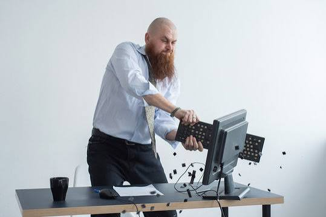

Beginner PC Building Tips
Planning your build before purchasing components can save time and help prevent expensive mistakes. These tips can make your first PC build easier.
Check Compatibility
Not every computer component works with every other component. Make sure your CPU is compatible with your motherboard and that your case has enough room for your graphics card, power supply, motherboard, and cooling system.
Compatibility Tip
Check the CPU socket, motherboard size, RAM type, graphics card size, and power supply requirements before buying your parts.
Create a Budget
Decide how much you want to spend before choosing your components. Your budget can help determine which parts are most important for your needs. I also suggest spending a little extra on essential components like the power supply and cooling system to ensure stability and longevity.
Try to build a balanced computer instead of spending most of your money on only one component.
Choose the Right Power Supply
Make sure your power supply provides enough power for all of your components. A reliable power supply is important because every part of your computer depends on it. Always choose a power supply from a reputable brand and ensure it has the necessary wattage for your build.
Having some extra power capacity can also make future upgrades easier.
Handle Components Carefully
Computer components can be damaged if they are handled incorrectly. Avoid touching electrical contacts and do not force a component into a slot.
Keep Cables Organized
Good cable management makes the inside of your computer easier to work with and can help prevent cables from blocking airflow.
Read the Manuals
Your motherboard and other components include important installation instructions. Keeping the manuals nearby can make the building process and troubleshooting much easier.
Install Drivers
After installing your operating system, install the correct drivers for components such as your motherboard and graphics card.
Drivers help the operating system communicate properly with your computer hardware.
Common Mistakes to Avoid

- Buying incompatible components
- Forgetting to connect power cables
- Using too much force when installing parts
- Forgetting to remove protective packaging
- Connecting the monitor to the wrong video port
- Not reading the motherboard manual
Before You Start Building
Review one final reminder before beginning your first PC build.